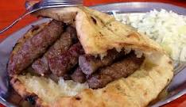

Cevapi

Ćevapi is a grilled dish of minced meat found traditionally in the countries of southeast Europe (the Balkans). It is considered a national dish of Bosnia and Herzegovina and Serbia and is also common in Croatia, Montenegro, Kosovo, North Macedonia and Slovenia. Ćevapi has its origins in the Balkans from before the Ottoman period, and represents a regional speciality similar to the köfte kebab. They are usually served in groups of five to ten pieces on a plate or in a flatbread (lepina or somun), often with chopped onions, sour cream, kajmak (milk cream), ajvar (relish), and salt.
Ingredients
- 1 (4 pound) beef brisket
- 1 (4 pound) boneless beef chuck roast
- 2 pounds beef short ribs
- 1/3 cup iodized salt
- 4 teaspoons garlic powder
- 2 1/2 teaspoons finely ground black pepper
Steps
- Cut the three different beef types into 1-inch pieces and place into a large bowl. Add salt, garlic powder, and pepper and mix until well combined. Cover and refrigerate for 24 hours.
- Insert a medium-coarse grinder plate in your meat grinder. Pass meat mixture 2 times through the meat grinder.
- Shape meat mixture into sausages the size and shape of a fat finger, roughly 3 inches long and 3/4 inch in diameter.
- Preheat an outdoor charcoal grill for medium-high heat and lightly oil the grate.
- Grill cevapi until cooked through, 4 to 5 minutes per side. An instant-read thermometer inserted into the center should read 160 degrees F (70 degrees C).